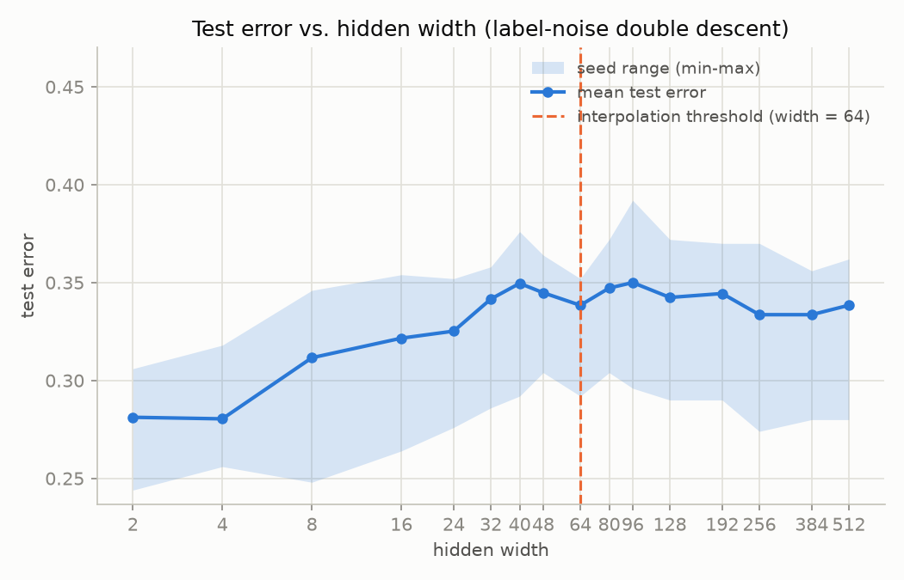
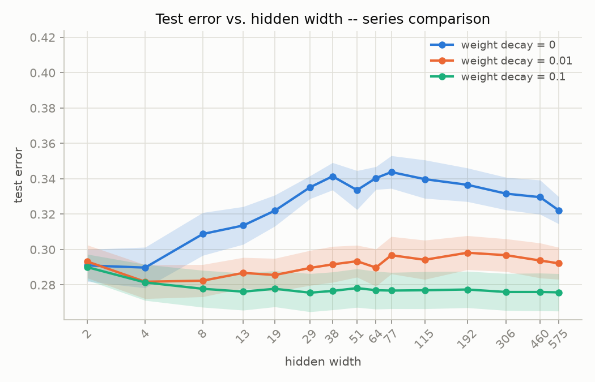
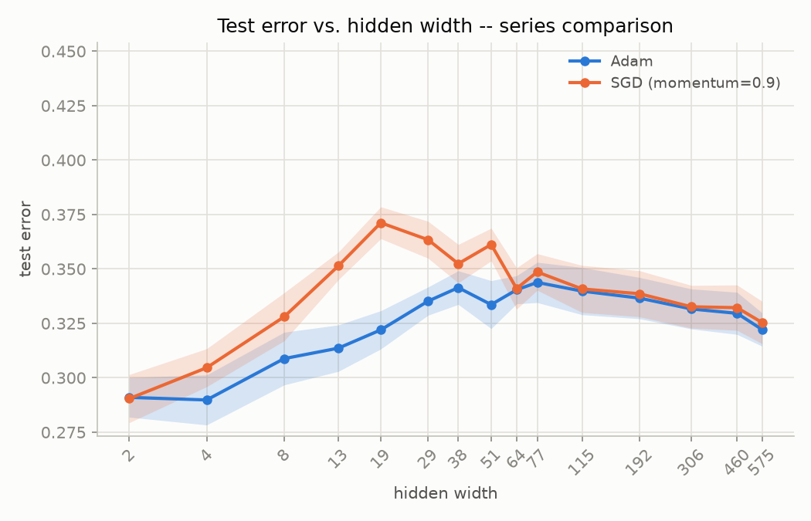
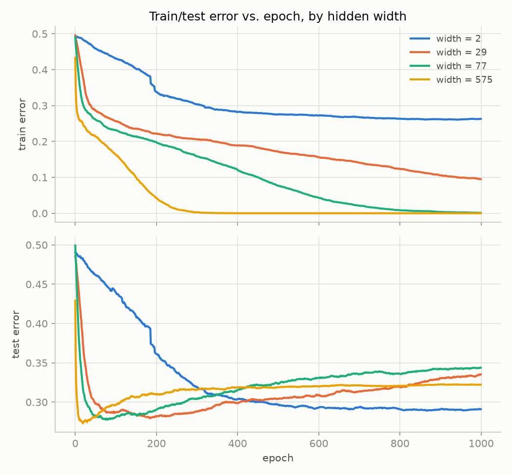
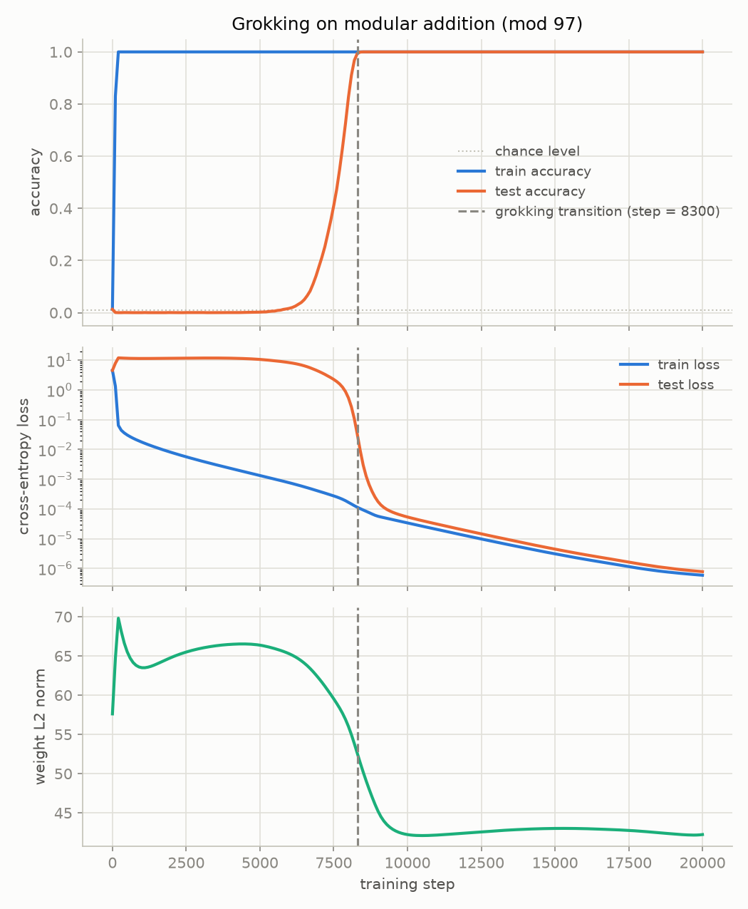
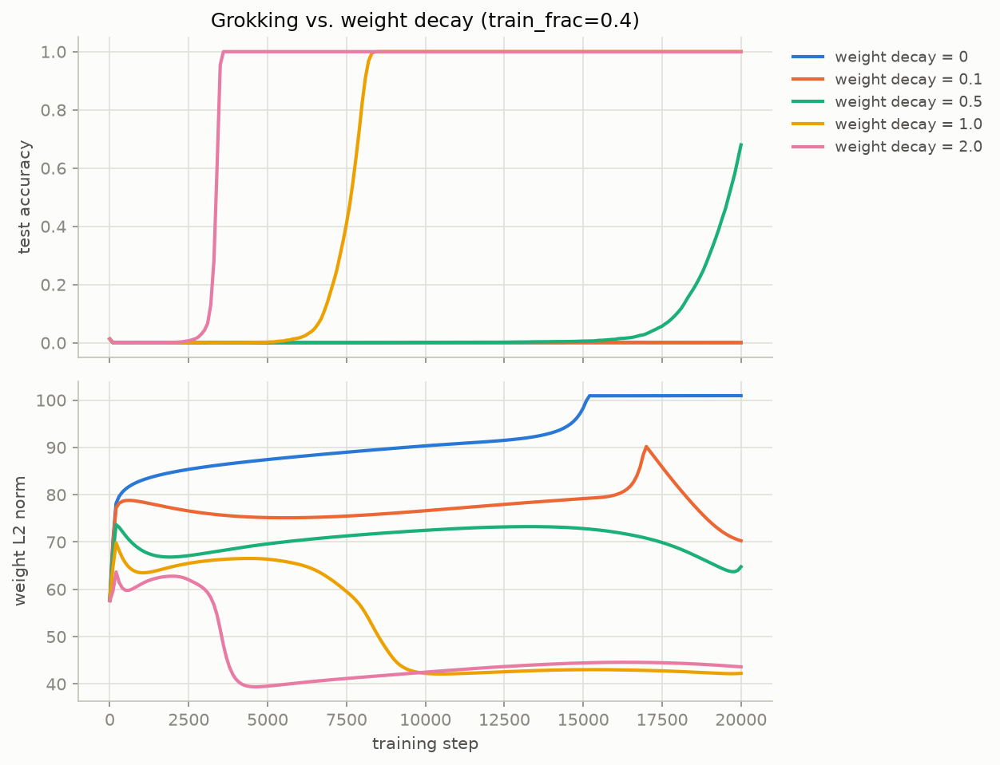
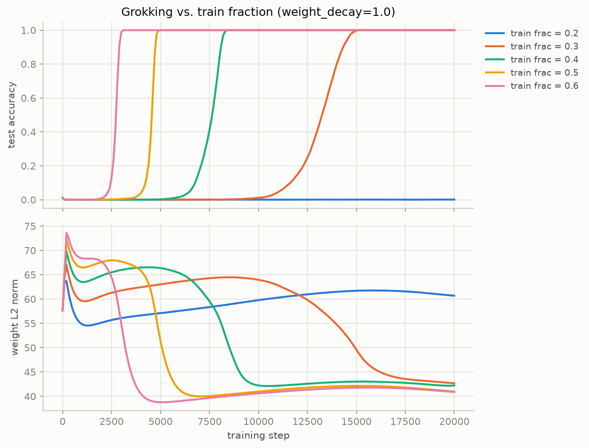

A record of every verification and sweep run for Dr. Raman's triage-classifier question — bug or phenomenon? Backprop is checked against autograd and finite differences, then double descent and grokking are reproduced and stress-tested against weight decay, optimizer choice, training-data fraction, and random seed.
Host
Hyper-V guest (Windows Server VM)
CPU
Intel Core i9-13900HX
Cores / threads exposed
8 / 16
Memory allocated
7.8 GiB
GPU
none passed through — CPU only
OS
Windows Server 2025 Standard, build 10.0.26100
Python
3.14.7
torch
2.14.0+cpu
numpy / pandas
2.5.3 / 3.0.5
matplotlib / scikit-learn
3.11.2 / 1.9.1
DURATION<1s
Environment verification
scripts/test_environment.py
Imports and exercises each required library with a real operation (matrix inverse, groupby, headless PNG render, a fit/score pass, an autograd backward pass) rather than just checking that it imports, and auto-installs anything missing via pip.
Check
Detail
Result
Python
3.14.7
PASS
NumPy
2.5.3
PASS
pandas
3.0.5
PASS
matplotlib
3.11.2
PASS
scikit-learn
1.9.1
PASS — smoke-test accuracy 0.94
PyTorch
2.14.0+cpu
PASS — CUDA not available (CPU only)
DURATION<1s
Manual backprop gradient check
scripts/gradient_check.py
A two-layer MLP (Linear→ReLU→Linear, softmax cross-entropy) with a hand-derived backward pass computed in plain tensor ops — no autograd. Checked against torch.autograd and against central finite differences (step h = 1e-5, evaluated in float64 to avoid cancellation) on a single 8-example minibatch, in_dim=5, hidden=6, out=3.
Cross-device reproduction
Device
Loss
Max rel. error (any tensor)
Verdict
This device (CPU)
1.042441
~7.4×10-8
ALL PASS (tol 1e-4)
Colab T4 (CUDA)
1.225929
~5.5×10-8
ALL PASS (tol 1e-4)
Loss differs by device because torch.randn(..., device="cuda") draws from a different RNG stream than CPU even under the same manual_seed — noted in SEED_AUDIT.md. Both devices agree the manual gradients are correct to ~1e-7.
Synthetic binary classification (1000 samples, 10 features, 20% label noise, 50/50 train/test split), swept across a two-layer MLP's hidden width. Widths are auto-centered on the analytic interpolation threshold (≈38 for this data size) rather than fixed powers of two: 2, 4, 8, 13, 19, 29, 38, 51, 64, 77, 115, 192, 306, 460, 575. 10 seeds × 1000 epochs per run.
Four sweep variants, same data/widths/seeds/epochs
Variant
Optimizer
Weight decay
Duration
Result
Baseline
Adam (lr 1e-3)
0
1m 39.9s
peak test error 0.344 @ width 77; interpolates (≤1% train err) at width 64
Regularized
Adam (lr 1e-3)
0.01
1m 57.3s
flat ~0.29; never interpolates
Regularized
Adam (lr 1e-3)
0.1
1m 53.8s
flat ~0.277; never interpolates
Optimizer ablation
SGD (lr 0.1, mom 0.9)
0
1m 33.9s
sharper peak 0.371 @ width 19; interpolates at width 29

double_descent.png — baseline, mean ±1 SEM across 10 seeds

double_descent_regularization.png — weight decay erases the bump

double_descent_optimizer.png — SGD peaks sharper & earlier than Adam

double_descent_epochwise.png — wide models overfit past their best epoch
The epoch-wise view (post-hoc analysis of the baseline run, no additional training) shows widths 77 and 575 reach their best test error near epoch 20–50 before drifting back up by epoch 1000 — the width-wise curve above is entangled with epoch-wise overfitting, not a pure capacity effect.
Every (a,b) pair in Z97×Z97, label (a+b) mod 97, embedding+MLP classifier, full-batch AdamW, 20,000 steps, logged every 100 steps. Three axes swept one at a time from the baseline (train_frac=0.4, weight_decay=1.0, seed=0).
Axis 1 · weight decay (train_frac 0.4, seed 0)
Weight decay
Duration
Transition step
Result
0.0
2m 57.2s
never
test_acc stuck ~0.001; weight L2 norm grows unbounded to ~101
0.1
2m 38.9s
never
weight norm humps to 90 then relaxes to 70; no generalization
0.5
2m 38.6s
—
rising late — test_acc 0.680 by step 19999, not yet converged
Axis 3 · random seed (train_frac 0.4, weight_decay 1.0)
Seed
Duration
Transition step
Result
0
2m 40.6s
8300
grok (baseline, shared row above)
1
5m 23.8s
7600
grok
2
2m 43.8s
9000
grok
3
4m 10.0s
5300
grok
4
2m 48.1s
8100
grok
Transition step across 5 seeds: mean 7660, std ≈1260 — meaningfully seed-dependent, but every seed groks well inside the 20,000-step budget. Not a seed=0 fluke.

grokking.png — baseline: accuracy, loss (log), weight norm

grokking_weight_decay_sweep.png — more decay groks earlier

grokking_train_frac_sweep.png — more data groks earlier